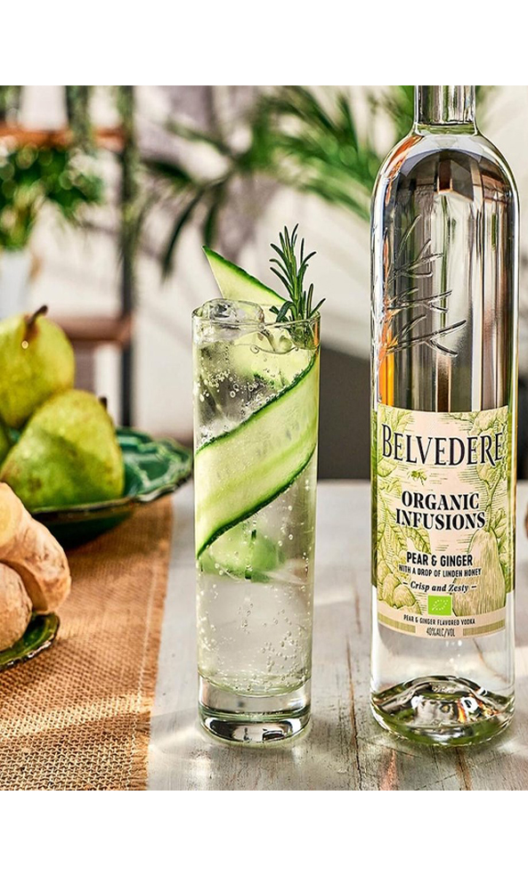

These vodkas are infused with organic
fruits and the exceptional botanicals. Using the finest
ingredients to create three different unique infusions. Each one
has a different palette and taste from each other.

Pear & Ginger
A crisp and zesty tasting blend of organic fruit and botanical infusions and organic Belvedere Vodka. Luscious ripe pear, light ginger spice, and the complexity of organic Belvedere vodka are touched by a final hint of linden honeyed sweetness, creating a spirit thats filled with pure flavor .To taste, the notes are richer, with juicy ripe pear, warm spiced ginger and rich set honey providing a luscious mouthfeel.
Blackberry & Lemongrass
The richness of blackberries combines with zesty and fragrant lemongrass, plus a hint of herbaceous sage to create an infused blackberry vodka with layered and balanced natural flavour. The taste is rich on the palate, the ripe blackberries enriched with fragrant sage, notes of peppery lemongrass and vanilla.
Lemon & Basil
A fresh and bright tasting blend of organic fruit and botanical infusions and organic Belvedere Vodka. Tart and zesty organic lemon and fragrant green basil are balanced with a touch of elderflower, creating a unique and perfectly layered combination of flavors. To taste, it has an incredibly succulent texture with notes of lemon tart, the herbaceous basil, floral elderflower and you may have picked up on some juicy Muscat grapes too.